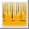

The Sound Panel display buttons visibly show a recorded sound in different formats.The most
useful format is the time domain wave display because you can easily to see word boundaries.
Time Doman  |
Pressing this button displays how a sound vibrates air over time. This
format is the most useful for editing sound waves. It is the default way that we display
sound recordings.
|
| Spectrograph |
Sound waves consist of many frequencies that combine to make a sound. An analogy is a
person throwing many rocks into a pool. The pattern of waves that result are a combination
of all the different patterns. Each rock represents one frequency. The spectrograph shows
the frequencies vertically on the display. The lowest frequencies show at the bottom;
the highest freqencies show at the top. The darker colors represent frequencies that are
louder. You can see word boundaries with the spectrograph display, but they are sometimes
not very distinct.
|
Frequency Domain  |
The frequency domain displays shows the frequencies over a particular selection. The low
frequencies show to the left, and the high frequencies show to the right. The loudness
displays vertically; louder frequencies display higher in the window display.
This display format will help us implement speech recognition capabilities. For example,
you might record a vowel sound, like ah, and display the sound in the time domain. When you
zoom in, You will see a reqularly repeating pattern. The frequency domain shows which sound
frequencies combine to create this pattern.
The frequency domain is for display only. The ACORNS sound editor disables the ability to
select or zoom when you are in this mode. Just click on the spectrograph or time domain
display buttons to restore the sound editor to its normal mode.
|
| Feature Vector Display |
The speech display performs the front end calculations over a recorded speech signal
and displays the results visually. Essentially, the program divides the recording into
a series of overlapping windows and performs some complicated algorithms. The result is
a feature vector of numbers for each window. These numbers display each in a different color.
In this way you can analyze how the feature vector changes over time.
This function is useful
as a research platform as we continue to prepare the ACORNS program to be able handle speech
recognition applications. When this is done, you will be able to speak in your native tongue
to get the ACORNS program to respond. Speech recognition capabilities will enable us to build
all sorts of games that will facilitate language learning.
|
| Cepstral Distance Display  |
This mode of display plots how the speech signal features vary over time.
This function is useful as a research platform as we continue to prepare the ACORNS program to be able handle speech
recognition applications. When this is done, you will be able to speak in your native tongue
to get the ACORNS program to respond. Speech recognition capabilities will enable us to build
all sorts of games that will facilitate language learning.
|